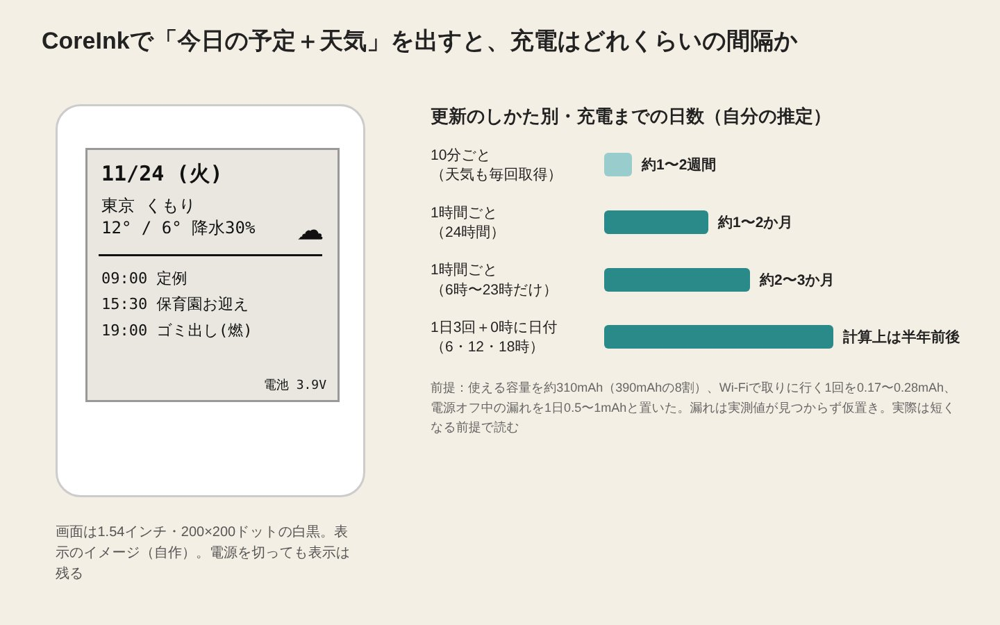

足がかりにした数字
Wi-Fiをつなぎっぱなしで約2時間38分で電池切れ（個人の放電試験）。Wi-Fiなしで1分ごとに起きて時計を書き換えると約8日（個人の作例）。つまりWi-Fiをつないでいる時間が電池の大半を食う。

中国・深センのM5Stackが作っている、電子ペーパー付きの手のひらサイズのマイコン。M5Stackはもともと、ESP32を小さな箱に入れて画面やボタンを付けた「すぐ動く」マイコンを出してきた会社で、CoreInkはその中の電子ペーパー版。日本ではスイッチサイエンスなどで買える。
発売は2020年ごろ（公式の発売日は確認できなかった）。公式ドキュメントの更新履歴によると、2024年10月25日から画面の部品がGDEW0154M09からGDEY0154D67に変わっている。古い作例のコードがそのまま動かないことがあるので、ライブラリは公式のM5Unifiedを使うのが無難。
要は「時計に起こしてもらい、取ってきて、描いて、すぐ寝る」。Wi-Fiをつないでいる時間がいちばん電池を食うので、取ってくる量を減らし、起きている時間を短くするのがすべて。
| やること | 方法 | メモ |
|---|---|---|
| 天気 | 気象庁の予報JSON（jma.go.jp/bosai/forecast/data/forecast/地域コード.json） | キー登録なしで取れる。天気・最高最低気温・降水確率で足りる |
| 予定 | Googleカレンダーを、Google Apps Scriptで「今日の予定だけ」の短いJSONにして返す | iCalをそのまま取ると重い。サーバー側で絞ると起きている時間が短くなる |
| 起こす | RTCにアラームを入れて電源オフ（M5UnifiedのM5.Power.timerSleep()） | 完全に電源が切れるので、ディープスリープより電池が減らない |
| 描く | 全体書き換えは1日1回程度、ほかは部分書き換え | 部分書き換えを続けると残像が出るので、ときどき全体を書き直す |
| 電池を見る | 電池電圧を読むAPIで、画面の隅に出す | 3.5Vを切ったら充電、のような目安を自分で決める |
日付だけならWi-Fiは要らない。RTCが日付を持っているので、0時の書き換えは電波を使わずに済む。
「何日持つか」の公式の数字はない。Wi-Fiの使い方と更新の回数で大きく変わるからで、見つかった実測の報告も条件がばらばら。なので、見つかった数字を足がかりに自分で計算した。以下は推定。
Wi-Fiをつなぎっぱなしで約2時間38分で電池切れ（個人の放電試験）。Wi-Fiなしで1分ごとに起きて時計を書き換えると約8日（個人の作例）。つまりWi-Fiをつないでいる時間が電池の大半を食う。
使える容量を約310mAh（390mAhの8割）。Wi-Fiで取りに行く1回を6〜10秒・平均100mA前後として0.17〜0.28mAh。電源オフ中の漏れは実測値が見つからなかったので、1日0.5〜1mAhと多めに仮置きした。
| 更新のしかた | 1日に使う量 | 充電まで（推定） |
|---|---|---|
| 10分ごと（毎回天気も取る） | 25〜41mAh | 約1〜2週間 |
| 1時間ごと（24時間） | 4.6〜7.7mAh | 約1〜2か月 |
| 1時間ごと（6時〜23時だけ） | 3.6〜6.0mAh | 約2〜3か月 |
| 1日3回（6・12・18時）＋0時に日付だけ | 1.0〜1.9mAh | 計算上は半年前後。実際は数か月と見る |
背面の磁石で冷蔵庫に貼れる。玄関の鉄の扉の内側もいい（出かける前に天気が見える）。ただしWi-Fiが弱い場所だとつながるまでが長くなり、電池が早く減る。冷蔵庫の横や窓際の直射日光、冬の玄関の冷え込みは電池によくない。
上に日付と天気、下に予定を3件くらいが現実的。月のカレンダー全体を出すのは字が小さすぎる。一覧性が欲しいなら、同じM5Stackの大きい電子ペーパー（M5Paperなど）を検討する。
残る。電子ペーパーは書き換えるときだけ電気を使う。だから「描いたらすぐ電源を切る」運用が成り立つ。販売元は書き換えを15秒に1回より頻繁にしないよう注意している。
CoreInkは他のM5Stack製品と電源の仕組みが違う。電源は側面のボタンの長押しで入れ、切るのはソフトウェアのAPIか、USBを抜いた状態で背面のリセットボタン。RTCで起こす作例はM5Unifiedに入っている。M5Paperでは、RTCのアラームで起こすときの不具合の報告もあるので、置く前に数日試す。
作るなら、天気は気象庁のJSON、予定はGoogle Apps Scriptで今日の分だけ返し、朝・昼・夕の3回更新で冷蔵庫に貼る。最初の1か月は電池の電圧を画面の隅に出して、この見積もりが合っているか確かめる。